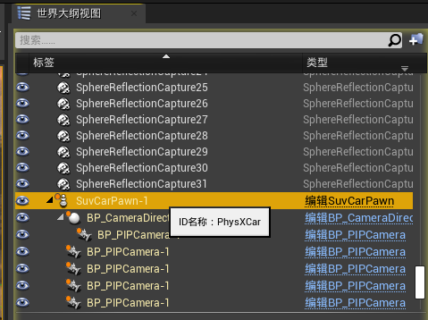

接下去主要介绍一下 AirSim 的 APIs 的使用. 官方 提供了 Python 和 C++ 两个版本, 我这里就主要以 C++ 来试验.
这篇文章的 Hello Car 的源码 .
[TOC]
Hello Car 源码官方文档 该部分的源码还没有更新, 这里源码为 GitHub 上的源码. 如果要用文档的例程, 需要把 两处
CarControllerBase::CarControls
改为
msr::airlib::CarApiBase::CarControls
1 2 3 4 5 6 7 8 9 10 11 12 13 14 15 16 17 18 19 20 21 22 23 24 25 26 27 28 29 30 31 32 33 34 35 36 37 38 39 40 41 42 43 44 45 46 47 48 49 50 51 52 53 54 55 56 57 58 59 60 61 62 63 64 65 66 67 68 69 70 71 72 73 74 75 76 77 78 79 80 81 82 83 84 85 86 87 88 89 90 91 92 93 94 95 #include "common/common_utils/StrictMode.hpp" STRICT_MODE_OFF #ifndef RPCLIB_MSGPACK #define RPCLIB_MSGPACK clmdep_msgpack #endif #include "rpc/rpc_error.h" STRICT_MODE_ON #include "vehicles/car/api/CarRpcLibClient.hpp" #include "common/common_utils/FileSystem.hpp" #include <iostream> #include <chrono> int main () using namespace msr::airlib; std ::cout << "Make sure settings.json has \"SimMode\"=\"Car\" at root. Press Enter to continue." << std ::endl ; std ::cin .get (); msr::airlib::CarRpcLibClient client; typedef ImageCaptureBase::ImageRequest ImageRequest; typedef ImageCaptureBase::ImageResponse ImageResponse; typedef ImageCaptureBase::ImageType ImageType; typedef common_utils::FileSystem FileSystem ; try { client.confirmConnection(); std ::cout << "Press Enter to get FPV image" << std ::endl ; std ::cin .get (); vector <ImageRequest> request = { ImageRequest("0" , ImageType::Scene), ImageRequest("1" , ImageType::DepthPlanner, true ) }; const vector <ImageResponse>& response = client.simGetImages(request); std ::cout << "# of images received: " << response.size () << std ::endl ; if (response.size () > 0 ) { std ::cout << "Enter path with ending separator to save images (leave empty for no save)" << std ::endl ; std ::string path; std ::getline(std ::cin , path); for (const ImageResponse& image_info : response) { std ::cout << "Image uint8 size: " << image_info.image_data_uint8.size () << std ::endl ; std ::cout << "Image float size: " << image_info.image_data_float.size () << std ::endl ; if (path != "" ) { std ::string file_path = FileSystem ::combine(path, std ::to_string(image_info.time_stamp)); if (image_info.pixels_as_float) { Utils::writePfmFile(image_info.image_data_float.data(), image_info.width , image_info.height , file_path + ".pfm" ); } else { std ::ofstream file(file_path + ".png" , std ::ios::binary); file.write (reinterpret_cast <const char *>(image_info.image_data_uint8.data()), image_info.image_data_uint8.size ()); file.close (); } } } } client.enableApiControl(true ); CarApiBase::CarControls controls; std ::cout << "Press enter to drive forward" << std ::endl ; std ::cin .get (); controls.throttle = 0.5f ; controls.steering = 0.0f ; client.setCarControls(controls); std ::cout << "Press Enter to activate handbrake" << std ::endl ; std ::cin .get (); controls.handbrake = true ; client.setCarControls(controls); std ::cout << "Press Enter to take turn and drive backward" << std ::endl ; std ::cin .get (); controls.handbrake = false ; controls.throttle = -0.5 ; controls.steering = 1 ; controls.is_manual_gear = true ; controls.manual_gear = -1 ; client.setCarControls(controls); std ::cout << "Press Enter to stop" << std ::endl ; std ::cin .get (); client.setCarControls(CarApiBase::CarControls()); } catch (rpc::rpc_error& e) { std ::string msg = e.get_error().as<std ::string >(); std ::cout << "Exception raised by the API, something went wrong." << std ::endl << msg << std ::endl ; std ::cin .get (); } return 0 ; }
Common APIS以下方法均在类： msr::airlib::CarRpcLibClient
reset: 重置汽车回初始状态 (PS: 调用这个方法, 汽车会重新出现在出生点, 状态均重置) . 你必须在调用 reset 之后再次调用 enableApiControl 和 armDisarm
(PS : 好像不调用这两个函数, 其他方法依然生效, 不晓得是不是版本更新过的缘故) .
confirmConnection: 每隔 1 秒检查链接状态, 并且在控制台输出连接进展.
enableApiControl: 处于安全原因, 默认禁止 API 控制自动驾驶汽车, 完全人工控制的 (通常通过 RC 或者 手柄模拟) . 用户必须调用这个函数去请求通过 API 控制. 这就像人工驾驶汽车可能禁止 API 控制, 意味着enableApiControl 是不起作用的. 这个可以通过isApiControlEnabled 来检查.
isApiControlEnabled: 返回 true 如果 API 控制被建立了. 如果是 false (默认设置), API 调用将会被忽略. 当成功调用enableApiControl, isApiControlEnabled 将返回 true.
PS : 默认好像是 true.
ping: 如果建立连接, 这个调用将会返回 true, 否则会阻塞知道直到超时.
simPrintLogMessage: 在仿真窗口输出指定的 message. 如果 message_param也被提供, 那么也将输出. 如果这个 API 被调用时使用相同的 message值, 但是 message_param不同, 那么前一行将会被新行覆盖 (而不是创建新行来显示) . 举个例子, 当使用不同的 i 值调用 simPrintLogMessage("Iteration: ", to_string(i)) 时, 将在同一行保持更新. 合法的 severity 参数是 0 到 3, 分别以不同的颜色.
PS : 不知道在哪儿看到这些输出日志).
simGetObjectPose, simSetObjectPose: 获取和设置 Unreal 环境中指定对象的位姿. 这里的对象表示 Unreal 术语中的 ”actor”. 它们通过标签 (tag) 和名称 (name) 来搜索. 请记住这些显示在 UE Editor 中的名称是每次运行时 自动生成 (auto-generated) 的, 并非永久的. 所以, 如果你想通过名称来引用 actor, 你必须在 UE Editor 中修改自动生成的名称. 你也可以在 Unreal Editor 中, 通过点击 actor 来完成对它添加一个标签. 然后去 Tags property , 点击 “+” 号, 添加一些字符串值. 如果多个 actors 有相同的标签, 那么第一个符合的将会被返回. 如果没有符合的对象被找到, 那么将会返回 NaN. 返回的位姿值是在以玩家出生点为原点的 NED 坐标系下的国际标准单位值. 对于simSetObjectPose, 指定的 actor 必须将 Mobility 设置为可移动, 否则你将得到未定义行为. simSetObjectPose 有一个 teleport 参数, 表示对象正在 moved through other objects (PS ： 瞬移？) , 如果移动成功, 则返回 true.
PS: 见下图，如果要获取这辆车的位姿，调用的参数名应该是 PhysXCar, 调用 SuvCarPawn-1 (自动生成的名称) 位姿值是 NaN
1 msr::airlib::Pose pose_car = client.simGetObjectPose("PhysXCar" );
